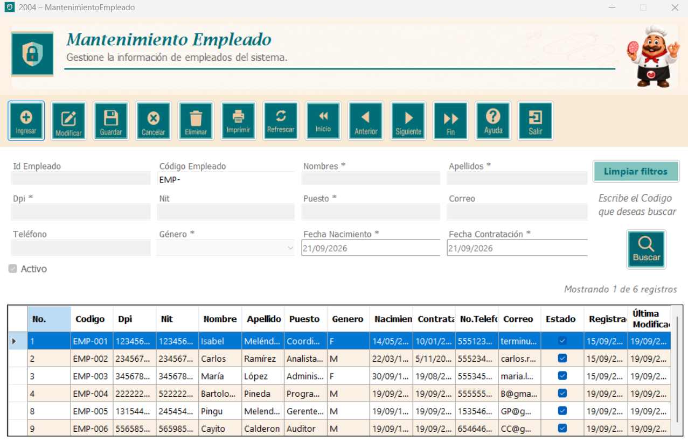
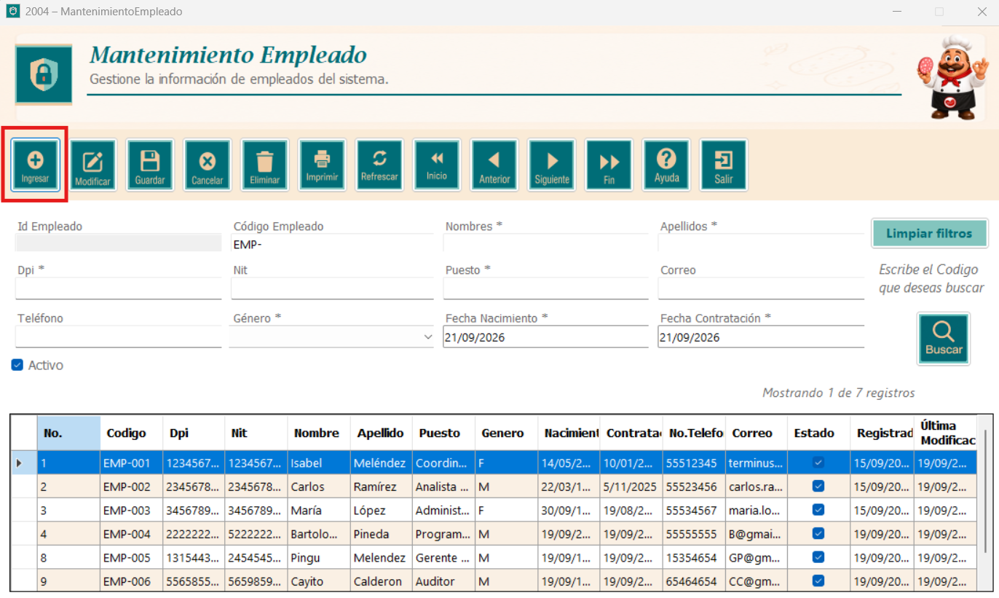
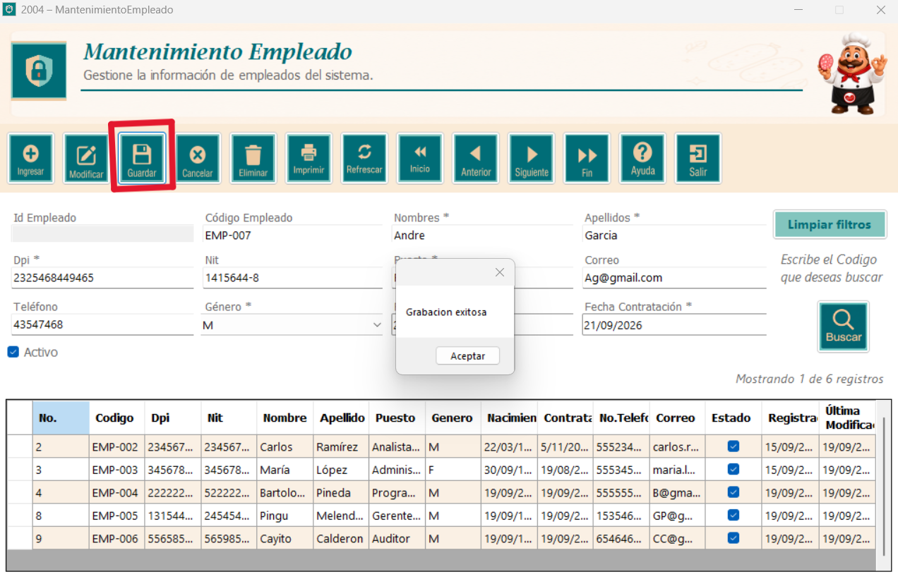
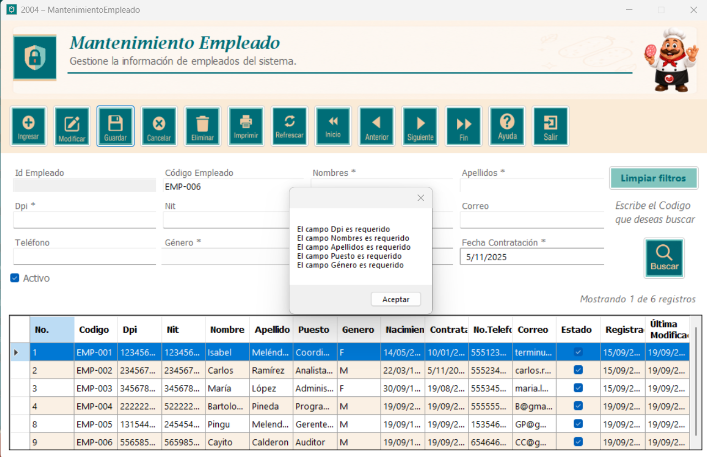
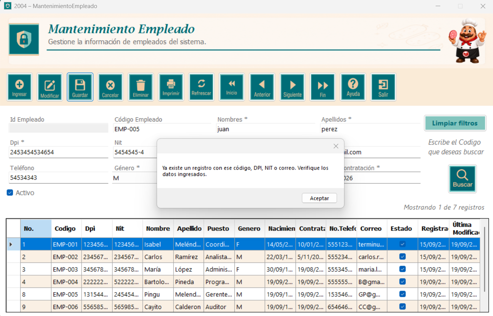
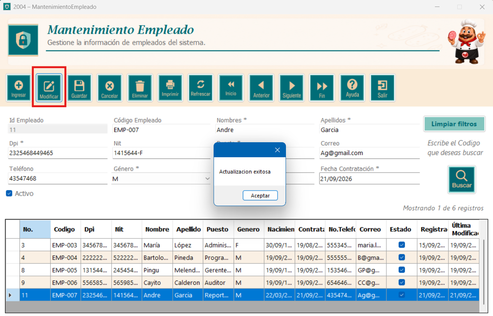
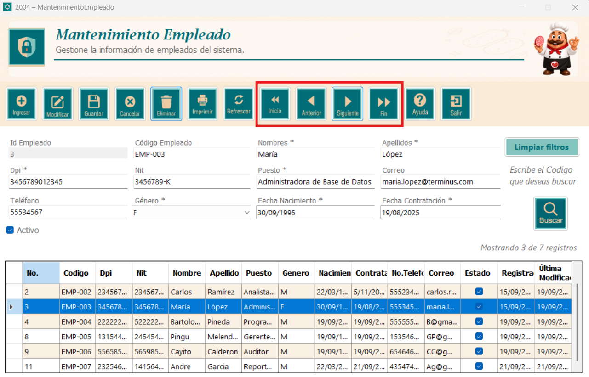
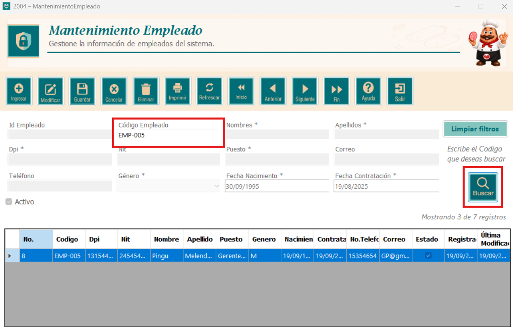
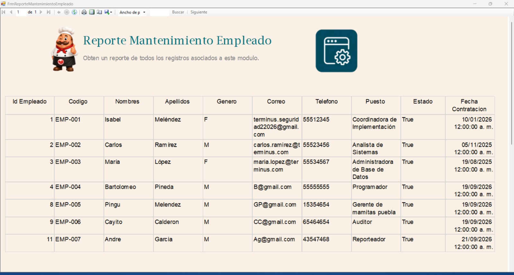

El módulo de Mantenimiento Empleado permite gestionar la información del personal registrado en el sistema como: ingresar nuevos empleados, consultar, modificar y eliminar los existentes y algunas otras funciones.

En la parte principal del módulo se encuentran todos los botones y funciones que se pueden realizar.
Para comenzar, Presione el bóton Ingresar, que limpia todos los textbox, combobox y checkbox de la ventana. Luego ingrese los datos solicitados del empleado y el estado del empleado.

Una vez definamos los datos dentro de cada espacio, presione el botón Guardar para almacenar los datos ingresados. Si el registro es unico y no esta duplicado, el sistema mostrará un mensaje confirmando que la grabacion fue exitosa como se observa en la captura.

Si dejas campos vacíos, el sistema lo validará y no permitirá el ingreso de datos, mostrando un mensaje de aviso.

De igual forma, si intenta ingresar un registro que ya existe, el sistema lo detectará e indicará que ya hay un registro igual al que esta intentando guradar.

Para modificar un empleado, primero seleccione la fila completa que desea cambiar. Despues, actualice los datos del empleado.

Finalmente, en el formulario se encuentran los botones de navegación, que le permiten desplazarse entre los registros.

Para utilizar esta función, escriba en el textbox el codigo de empleado que desea buscar. No es necesario preocuparse por ingresar mas numeros de los autorizados, ya que el sistema no permitira mas numeros. Luego presione el botón Consultar y se mostrarán en pantalla el registro de datos que coincida con lo escrito.

Para obtener un reporte de todos los registros asociados a este módulo, presione el botón Imprimir. Se abrirá una ventana con el listado de los empleados donde se muestran todos los datos registrados.
Desde la barra superior del reporte puede desplazarse entre páginas, actualizar la información, ajustar el zoom, buscar un texto dentro del reporte, imprimirlo o exportarlo.
